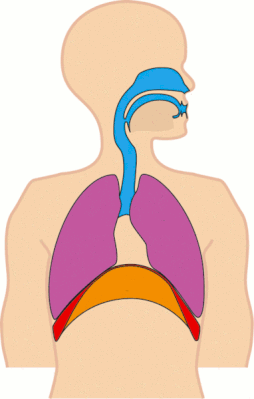
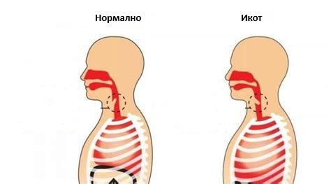
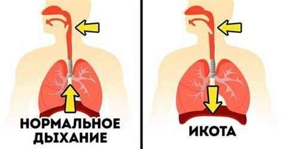

Икот

Икот
Икотът е спазъм на диафрагмата, често предизвикан от подраздразнение на френския нерв; обикновено е безобиден, но може да бъде дълготраен.
В повечето случаи, икотът минава без необходимост от специално лечение.


При продължаващ икот, могат да бъдат опитани различни методи за прекратяване, включително дишане в хармония, пие нар с вода или задържане на дъх. Ако икотът продължава, може да бъде полезно консултиране с лекар за оценка и съвети.
Допълнителни Съвети
В опитите да прекратите икота, опитайте се да дишате спокойно и равномерно. Пийте малки глътки вода или задръжте дъха за кратко. Избягвайте преяждане или пиене на газирани напитки, които могат да допринесат за появата на икота.
Ако проблемът с икота продължава и ви притеснява, се консултирайте с лекар за подробна оценка и съвети.